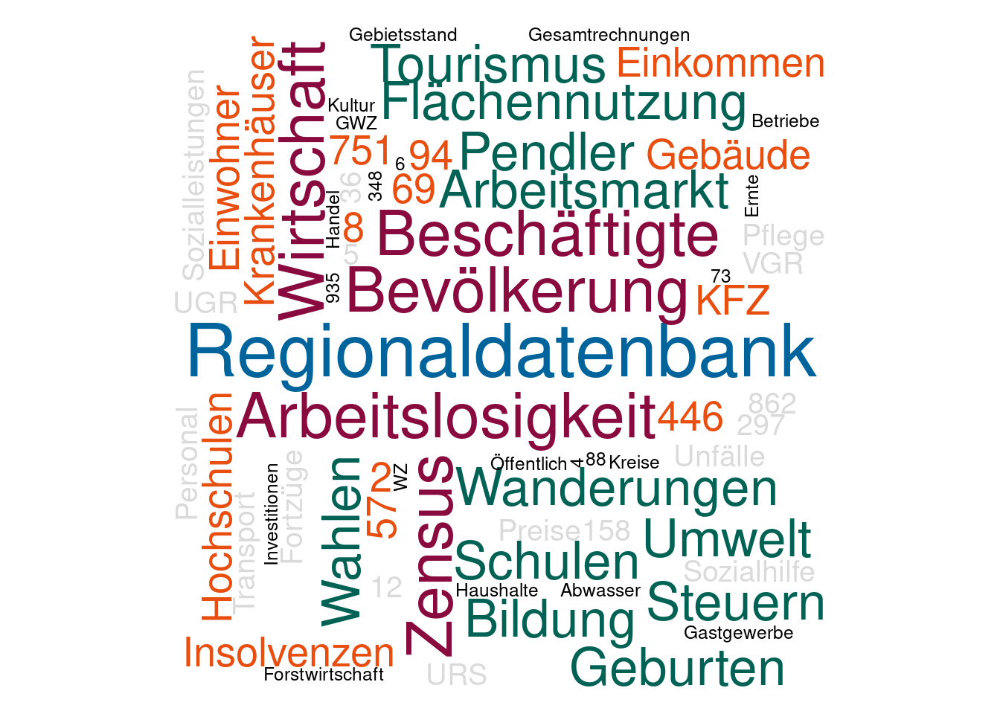

Word Cloud-Generator für die Veröffentlichungsdatenbanken
bei IT.NRW
Lars Hofmann
March 15, 2018
Überblick
Das R-Paket wordcloud von Ian Fellows ist ein einfaches und elegantes Tool für die randomisierte Erzeugung von Schlagwortwolken (engl.: tag cloud, word cloud). Damit lassen sich die häufigsten Wörter insbesondere bei umfangreichen Texten in einer zusammenfassenden grafischen Visualisierung darstellen.
Zusammen mit dem R-Paket svglite können diese Schlagwortwolken als extrem kleine SVG-Dateien bereitgestellt werden. Die Texte bleiben erhalten (keine Pfadumwandlung) und können komplett nachbearbeitet werden. Die SVG-Dateigröße von svglite schrumpft im Vergleich zur Standard-SVG-Schnittstelle von R auf ein Fünfundzwanzigstel (ca. 17 kb).
Im Folgenden möchte ich für die von IT.NRW betriebenen Veröffentlichungsdatenbanken Landesdatenbank Nordrhein-Westfalen (LDB), Regionaldatenbank Deutschland (RDB) und Kommunale Bildungsdatenbank (BDB) Schlagwortwolken mit zentralen Begriffen des jeweiligen statistischen Datenangebots erzeugen. Da sich hier eine Gewichtung (= Textgröße in der Cloud) nach Häufigkeiten nicht eignet, werden diese Faktor manuell bestimmt. Die Farbgebung wird dem Corporate Design von IT.NRW angepasst.
Setup und Eingangsdaten
Setup
Zuerst kümmern wir uns um die benötigten R-Pakete. Das folgende Skript prüft, ob diese bereits auf dem System installiert sind. Fehlende Pakete werden direkt installiert und in die Session geladen. Gegebenenfalls müssen Pakete mit Administratorrechten installiert werden.
libs <- c("wordcloud", "svglite")
for (x in libs){
if(x %in% rownames(installed.packages()) == FALSE) {
print(paste0("installing ", x, "..."))
install.packages(x)
}
else{
print (paste0(x, " is already installed"))
}
library(x, character.only = TRUE)
}## [1] "wordcloud is already installed"
## [1] "svglite is already installed"Eingangsdaten
Als Eingangsdaten benötigen wir:
- drei Dateien mit den jeweiligen Begriffen der Datenbanken “[DB]” sowie den Gewichtungen:
words_[DB].csv - drei Dateien mit den jeweiligen Farbpaletten für die Datenbanken “[DB]” (RGB-Absolutwerte):
cali_[DB].csv
Für Komma-separierte Daten nutzen wir read.csv. Wegen der deutschen Umlaute muss das Argument encoding gesetzt werden.
terms_ldb <- read.csv("words_ldb.csv",
header=TRUE,
colClasses=c("character",
rep("numeric",2)),
encoding = "latin1")
terms_rdb <- read.csv("words_rdb.csv",
header=TRUE,
colClasses=c("character",
rep("numeric",2)),
encoding = "latin1")
terms_bdb <- read.csv("words_bdb.csv",
header=TRUE,
colClasses=c("character",
rep("numeric",2)),
encoding = "latin1")
knitr::kable(
head(terms_ldb), caption = "Ausschnitt aus der
Begriffsdatei der LDB."
)| word | mean | freq |
|---|---|---|
| Landesdatenbank NRW | 0.0 | 6 |
| Bevölkerung | 5.0 | 5 |
| Wirtschaft | 5.0 | 5 |
| VPI | 5.0 | 5 |
| Beschäftigte | 4.4 | 5 |
| Arbeitslose | 4.1 | 4 |
Die Farbpaletten müssen zunächst in Data Frames calib_[DB] geladen werden
calib_ldb <- read.csv("cali_ldb.csv", header = TRUE)
calib_rdb <- read.csv("cali_rdb.csv", header = TRUE)
calib_bdb <- read.csv("cali_bdb.csv", header = TRUE)
knitr::kable(
head(calib_ldb), caption = "RGB-Werte für die
Farbgebung der LDB."
)| name | r | g | b |
|---|---|---|---|
| Schwarz | 0 | 0 | 0 |
| Grau | 218 | 218 | 218 |
| Blutorange | 232 | 78 | 15 |
| Grasgruen | 177 | 200 | 11 |
| Sonnengelb | 242 | 149 | 5 |
| Hausblau | 0 | 100 | 156 |
Erzeugen der Schlagwortwolken
Die Funktion set.seed() stellt die Reproduzierbarkeit des Ergebnisses sicher. Der von wordcloud genutzte R-Zufallszahlengenerator wird damit auf bestimmte Werte “fixiert”.
Die Skalierung der SVG-Abbildungen unterscheiden sich je nach dem, ob die Abbildungen in das RMarkdown-Dokument oder in separate Dateien exportiert werden. Mit scale = c([MAX], [MIN]) lässt sich das Verhalten beeinflussen.
#set.seed(1034)
set.seed(5231)
clrs_ldb <- rgb(calib_ldb$r, calib_ldb$g, calib_ldb$b,
names = calib_ldb$name, max = 255)
#svglite("cloud_ldb2.svg")
wordcloud(words = terms_ldb$word,
freq = terms_ldb$freq,
min.freq = 1,
random.order = FALSE,
rot.per = 0.3,
scale = c(2.5,.3),
colors = clrs_ldb,
system_fonts = list(sans = "DejaVu Sans"))#dev.off()Für die zwei anderen Wolken passen wir die obere Größenklasse [MAX] in scale an, damit die DB-Bezeichnungen die Breite ausfüllen.
#set.seed(1034)
set.seed(5231)
clrs_rdb <- rgb(calib_rdb$r, calib_rdb$g, calib_rdb$b,
names = calib_rdb$name, max = 255)
#svglite("cloud_rdb2.svg")
wordcloud(words = terms_rdb$word,
freq = terms_rdb$freq,
min.freq = 1,
random.order = FALSE,
rot.per = 0.3,
scale = c(3.1,.3),
colors = clrs_rdb,
system_fonts = list(sans = "DejaVu Sans"))
#dev.off()#set.seed(1034)
set.seed(5281)
clrs_bdb <- rgb(calib_bdb$r, calib_bdb$g, calib_bdb$b,
names = calib_bdb$name, max = 255)
#svglite("cloud_bdb2.svg")
wordcloud(words = terms_bdb$word,
freq = terms_bdb$freq,
min.freq = 1,
random.order = FALSE,
rot.per = 0.3,
scale = c(3.1,.3),
colors = clrs_bdb,
system_fonts = list(sans = "DejaVu Sans"))
#dev.off()Ergebnis
Wie schon eingangs erwähnt, können die mittels svglite auf Minimalgröße exportierten SVG-Dateien umfangreich nachbearbeitet werden. Àlle wichtigen SVG-Attribute wie viewbox, font-size, fill, font-family sowie die Begriffe selbst stehen als indizierbare Elemente zur Verfügung.
Systeminfo
sessionInfo()## R version 3.4.4 (2018-03-15)
## Platform: x86_64-pc-linux-gnu (64-bit)
## Running under: Ubuntu 16.04.4 LTS
##
## Matrix products: default
## BLAS: /usr/lib/libblas/libblas.so.3.6.0
## LAPACK: /usr/lib/lapack/liblapack.so.3.6.0
##
## locale:
## [1] LC_CTYPE=de_DE.UTF-8 LC_NUMERIC=C
## [3] LC_TIME=de_DE.UTF-8 LC_COLLATE=de_DE.UTF-8
## [5] LC_MONETARY=de_DE.UTF-8 LC_MESSAGES=de_DE.UTF-8
## [7] LC_PAPER=de_DE.UTF-8 LC_NAME=C
## [9] LC_ADDRESS=C LC_TELEPHONE=C
## [11] LC_MEASUREMENT=de_DE.UTF-8 LC_IDENTIFICATION=C
##
## attached base packages:
## [1] stats graphics grDevices utils datasets methods base
##
## other attached packages:
## [1] svglite_1.2.1 wordcloud_2.5 RColorBrewer_1.1-2
## [4] forcats_0.2.0 stringr_1.2.0 dplyr_0.7.4
## [7] purrr_0.2.4 readr_1.1.1 tidyr_0.8.0
## [10] tibble_1.4.2 ggplot2_2.2.1 tidyverse_1.2.1
##
## loaded via a namespace (and not attached):
## [1] slam_0.1-42 reshape2_1.4.3 haven_1.1.1 lattice_0.20-35
## [5] colorspace_1.3-2 htmltools_0.3.6 yaml_2.1.15 utf8_1.1.3
## [9] rlang_0.1.6 pillar_1.1.0 foreign_0.8-69 glue_1.2.0
## [13] gdtools_0.1.7 modelr_0.1.1 readxl_1.0.0 bindrcpp_0.2
## [17] bindr_0.1 plyr_1.8.4 munsell_0.4.3 gtable_0.2.0
## [21] cellranger_1.1.0 rvest_0.3.2 psych_1.7.8 evaluate_0.10.1
## [25] knitr_1.19 parallel_3.4.4 highr_0.6 broom_0.4.3
## [29] tufte_0.3 Rcpp_0.12.15 scales_0.5.0 backports_1.1.2
## [33] jsonlite_1.5 mnormt_1.5-5 hms_0.4.1 digest_0.6.12
## [37] stringi_1.1.6 grid_3.4.4 rprojroot_1.3-2 cli_1.0.0
## [41] tools_3.4.4 magrittr_1.5 lazyeval_0.2.1 crayon_1.3.4
## [45] pkgconfig_2.0.1 rsconnect_0.8.5 xml2_1.2.0 lubridate_1.7.2
## [49] assertthat_0.2.0 rmarkdown_1.8 httr_1.3.1 rstudioapi_0.7
## [53] R6_2.2.2 nlme_3.1-131.1 compiler_3.4.4
Dieses Werk ist lizenziert unter einer Creative Commons Attribution-ShareAlike 4.0 International License.